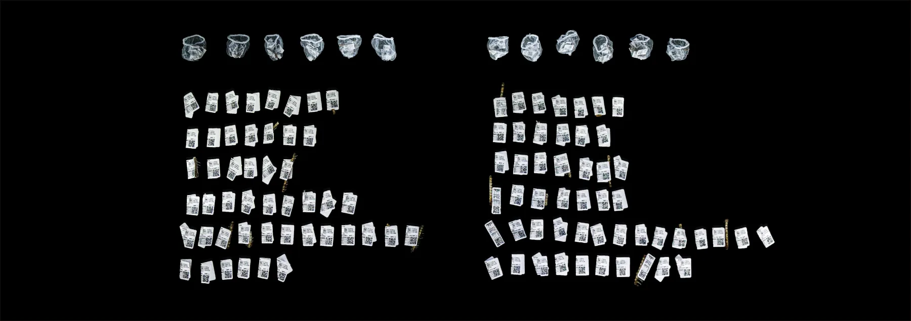
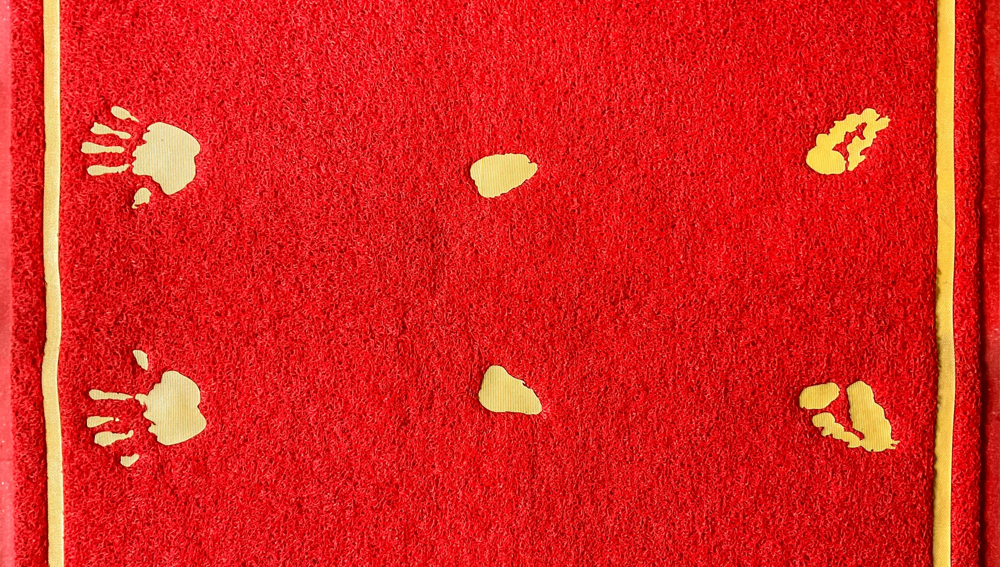
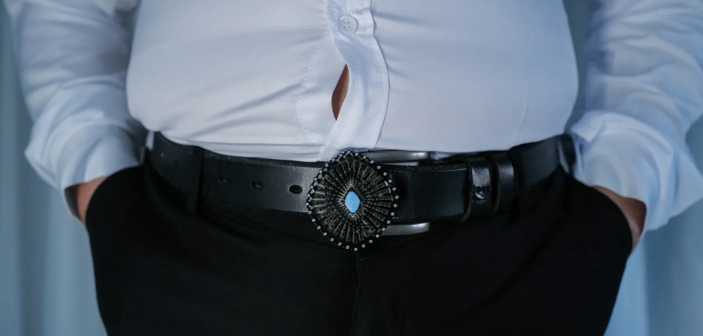
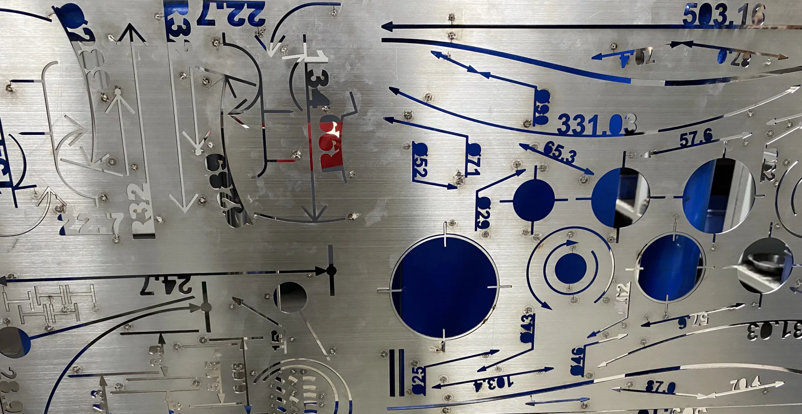

01  鱼米之乡 年份：2024 类型：装置 / 摄影文献 / 家庭调查 媒介：食物残余、米粒、鱼骨、塑料网袋、价签、二维码标签、家庭空间、摄影 家庭餐后残余被处理为近似取证的材料，用以观察家庭结构中不可见的张力与权力关系。
02  凯旋门 年份：2024 类型：装置 / 空间作品 / 建筑介入 媒介：多立克柱、牛仔布、红色门垫、锁、铃、空间组织 建筑中关于权威的符号被转化为身体阈限，通过柱、布料与进入姿态讨论权力、身体和通行。
03  人工合成钻 年份：2024 类型：首饰 / 物 / 象征性材料研究 媒介：金属、片剂形态、皮带扣、戒指 药片形态被重新放入宝石与首饰的语境中，考察价值、硬度、欲望与象征合法性的生成。
04  格物 年份：2023–2024 类型：首饰 / 基于物的研究 / 测量系统 媒介：激光切割不锈钢、氩弧焊、干果、工程制图逻辑 工程制图与测量系统被转化为实体首饰框架，用以追问测量是否中立。